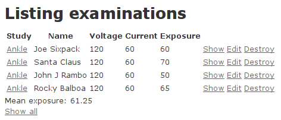

Tutorial 1: DICOM on Rails!
Populating a Ruby on Rails database with data from your DICOM directory
Although my primary idea when starting the Ruby DICOM project was really not about making a Rails application, the interest I've seen initially has in large part has been related to Rails, so I thought I'd go ahead and make that the subject of my first tutorial.
Let us start with a list of what you'll need for this tutorial:
Open Flash Chart 2 plugin for Rails (Optional: This is used to make some nice-looking graphs in our web interface)
The goal in this tutorial: To transfer all relevant content from our local DICOM storage directory to a database which will be accessible through a web front end to facilitate easy oversight of our data. This will be done in two steps: (1) Creating the database/web front end using Rails and (2) populating the database with our DICOM data using a Ruby script.
Part 1: Setting up the Rails environment
Our DICOM directory contains files from patients that have received diagnostic X-ray CT examinations. We will make a simple database that contains 5 entries: patient name, examination study, X-ray voltage, current and exposure. In addition to the normal Rails setup, we want to add the possibility of clicking on an examination study and filter the database based on the selected study. OK, assuming you have installed the necessary components, let's go ahead and create our database:
$ rails new dicom
$ cd dicom
$ rake db:create:all
$ rails generate scaffold Examination study:string name:string voltage:string current:string exposure:string
$ rake db:migrate
Now we have the basic Rails environment set up. It will give you the option of viewing all database entries in a long list, as well as selecting a single entry and view its details. You may even edit or delete entries, although that is not of interest to us in this situation. What we want to do is making the examination study a hyperlink, which when clicked makes Rails display only the patients that have had this particular study. In addition, we will add a line at the bottom of our list which gives us the average exposure in the list displayed at the screen. In order to do this, two files have to be modified. First we will modify the controller: /app/controllers/examinations_controller.rb
In the method index, we will add a variable @study used for the filtering as well as a variable used for calculating mean exposure values. The @mean_exposure variable sits inside an if statement. When finished, the index method looks like this:
def index @examinations = Examination.find(:all) @study = params[:study] @mean_exposure = Examination.average(:exposure, :conditions => ['study == ?', @study]) if @study
respond_to do |format| format.html # index.html.erb format.xml { render :xml => @examinations } end end
Next, we need to modify the Ruby-embedded HTML file that displays the list of entries: /app/views/examinations/index.html.erb
What happens in this file is that a table is generated, where the content (database records) is inserted with an iterator. In this iterator we need to insert an if statement, so that a database record will not be displayed if the @study keyword is set and the database record's study differs from the chosen one. In addition, the study field must be made into a hyperlink with an action that calls the index method in the controller. Furthermore, at the bottom of the displayed page we want the average exposure value to be displayed, but only if a certain study has been selected. When finished, the file should look something like this:
<h1>Listing examinations</h1>
<table> <tr> <th>Study</th> <th>Name</th> <th>Voltage</th> <th>Current</th> <th>Exposure</th> </tr>
<% @examinations.each do |examination| %> <% unless @study and @study != examination.study %> <tr> <td><%= link_to examination.study, :action => 'index', :study => examination.study %></td> <td><%= examination.name %></td> <td><%= examination.voltage %></td> <td><%= examination.current %></td> <td><%= examination.exposure %></td> <td><%= link_to 'Show', examination %></td> <td><%= link_to 'Edit', edit_examination_path(examination) %></td> <td><%= link_to 'Destroy', examination, :confirm => 'Are you sure?', :method => :delete %></td> </tr> <% end %> <% end %> </table>
<% if @mean_exposure %> <br /><%= "Mean exposure: #{@mean_exposure}" %><br /> <% end %> <br /> <%= link_to 'Show all', examinations_path %>
That's it for the database/web front end. You can check it out to make sure everything is ok by running the following command:
$ rails server
That starts the web server, and you access it by pointing your browser to localhost.
Part 2: Setting up a script to read the DICOM directory and store tag data in our Rails database
We now need to make a script that gives us access to the Rails database, discovers all the files contained in the chosen directory, including all its subdirectories, and finally reads the DICOM data and puts it in the database.
Task 1: Access to the Rails database
First of all, to be able to access the Rails database, the script must be executed from within the folder of the Rails project. Furthermore, our script needs to require some modules and load the database. As such, the start of our script file will look like this:
# Libraries required: require 'find' require 'active_record' require 'dicom'
# Load your yml config from rails: db_config = YAML::load(File.open("./config/database.yml")) # Connect to the proper database: ActiveRecord::Base.establish_connection(db_config['development']) # Load the custom model we created earlier: require './app/models/examination'
Task 2: Get a list of all the files contained within the folder
For this task we will use a neat little script that fits the job quite well. It allows you to specify an array of folders to be searched (a search which includes any sub-folders).
# Discover all the files contained in the specified directory and all its sub-directories:
dirs = ["/home/dicomdir"]
files = Array.new
for dir in dirs
Find.find(dir) do |path|
if FileTest.directory?(path)
next
else
files << path # Store the file in our array
end
end
end
Tasks 3 and 4: Extract DICOM data from each file and store it in the database
The last two tasks we'll do inside an iterator which traverses our file string array and reads the files using the ruby-dicom library. If a particular file is successfully parsed as a DICOM object, it extracts the tags that we are interested in, creates a new database record and writes our tags to it. Note that in this example the directory contains only one DICOM file per patient. If your real directory contains several files per patient, which is not at all unreasonable, you will have to insert some logic to deal with that.
# Use a loop to run through all the files, reading its data and transferring it to the database.
files.each do |file|
# Read the file:
dcm = DICOM::DObject.read(file)
# If the file was read successfully as a DICOM file, go ahead and extract content:
if dcm.read?
study = dcm.value("0008,1030")
name = dcm.value("0010,0010")
voltage = dcm.value("0018,0060")
current = dcm.value("0018,1151")
exposure = dcm.value("0018,1152")
# Store the data in the database:
e = Examination.new
e.study = study
e.name = name
e.voltage = voltage
e.current = current
e.exposure = exposure
e.save
end
end
Let us name the script populate_dicom.rb. Execute it (ruby populate_dicom.rb), then sit back and relax while it does all the work and populates your Rails database!
That's it! We now have a working Rails database with our DICOM directory data loaded into it. Launch the webserver and point your browser to localhost to see how it looks!
Clicking on a link of one of the examination types gives you an overview of patients who have received that particular examination:

Note that the actual values in this particular database are mostly made up, so don't pay too much attention to them. When importing strings into the database, you may discover that some of them could do with some formatting to make it a bit nicer. Luckily, Ruby has a lot of nice methods for string processing, like upcase, downcase, joining, splitting and capitalizing, so that should be fairly straight forward.
Bonus Part: Inserting a flash chart to get a nice, graphical of the distribution of studies
There are various approaches if you want to include som charts in your Rails application, and although I am no fan of Flash in general, I have to say Open Flash Chart is a pretty nice tool for the job. To install this I believe you need to have Git installed. Follow this link for the Unix version, or go here for the Git Windows version. For installing the Rails plugin for Open Flash Charts, follow the link at the top of this page. In short, run the following command in your rails project folder, then copy two files to their destination as explained in the link.
$ rails plugin install git://github.com/pullmonkey/open_flash_chart.git
What we are going to do is make a pie chart which shows us the distribution of the examination studies that exist in the DICOM Rails database. To accomplish this, we will make a new controller that handles the pie chart and edit this to construct our data of interest. Furthermore we will make a corresponding index.html.erb file which will display the chart, and lastly, insert a link in our examination view which points to this chart. Start by creating the new controller:
$ rails generate controller Pie
We also need to make a minor addition to our routes. Open RAILS_ROOT/config/routes.rb and add these two lines:
match "pie" => "pie#index" match "pie/graph_code" => "pie#graph_code"
Next, we need to create a index.html.erb file for this controller, in the folder RAILS_ROOT/app/views/pie/ and insert the following code to that file:
<script type="text/javascript" src="/javascripts/swfobject.js"></script> <%=raw @graph %>
Now we need to modify the controller to create the chart and use the data that is of interest to us. Edit the file pie_controller.rb, which you will find in the RAILS_ROOT/app/controllers/ folder, with the following code:
class PieController < ApplicationController
def index @graph = open_flash_chart_object(800,600,"/pie/graph_code") end
def graph_code # Determine the distribution of examination studies in the database: examinations = Examination.all studies = Array.new examinations.each do |e| studies << e.study end unique = studies.uniq results = Hash.new unique.each do |u| results[u] = studies.select{|s| s == u}.length end # Create the pie chart and insert the determined data: title = Title.new("Distribution of Studies") pie = Pie.new pie.start_angle = 35 pie.animate = true pie.tooltip = '#val# of #total#<br>#percent#' pie.colours = ["#0000ff", "#ff0000", "#00ff00"] values = Array.new results.each do |k, v| values << PieValue.new(v, k) end pie.values = values chart = OpenFlashChart.new chart.title = title chart.add_element(pie) chart.x_axis = nil render :text => chart.to_s end
end
Note that I have specified 3 colours here, as I know I have 3 elements in my chart. If you don't know how many elements that will make up your chart, you can either avoid specifying the colours altogether, or you need to use some logic to set up the correct number of colors that is needed for your chart.
Our chart is ready: all that remains is to edit the index.html.erb file of the examinations controller, so that it will display a link at the top of the page, pointing to the chart we just made. Add the following lines at the top of the file:
<% unless @study %> <%= link_to 'Pie Chart of the study distribution', 'pie' %> <% end %>
The link will be displayed at the top of the page when you are at the "main" page (when displaying selected studies or single database entries it will be hidden). Clicking on the link will reveal the nice-looking flash pie chart, where a small information box will appear as your mouse hovers above a slice:
That's it! You now have a working Rails database containing a snapshot of the content of your DICOM directory. It may not be that pretty (admittedly I am no expert in neither Rails nor HTML), but with the basic functionality illustrated it should be a good starting point for you to make something useful from. Now go on an impress your boss with a snazzy DICOM on Rails web application!
I hope you have found this tutorial helpful, and as always: All feedback is appreciated!
Published: August 25th 2008
Last updated: February 22nd 2015
Christoffer Lervåg
chris.lervag @nospam.com @gmail.com